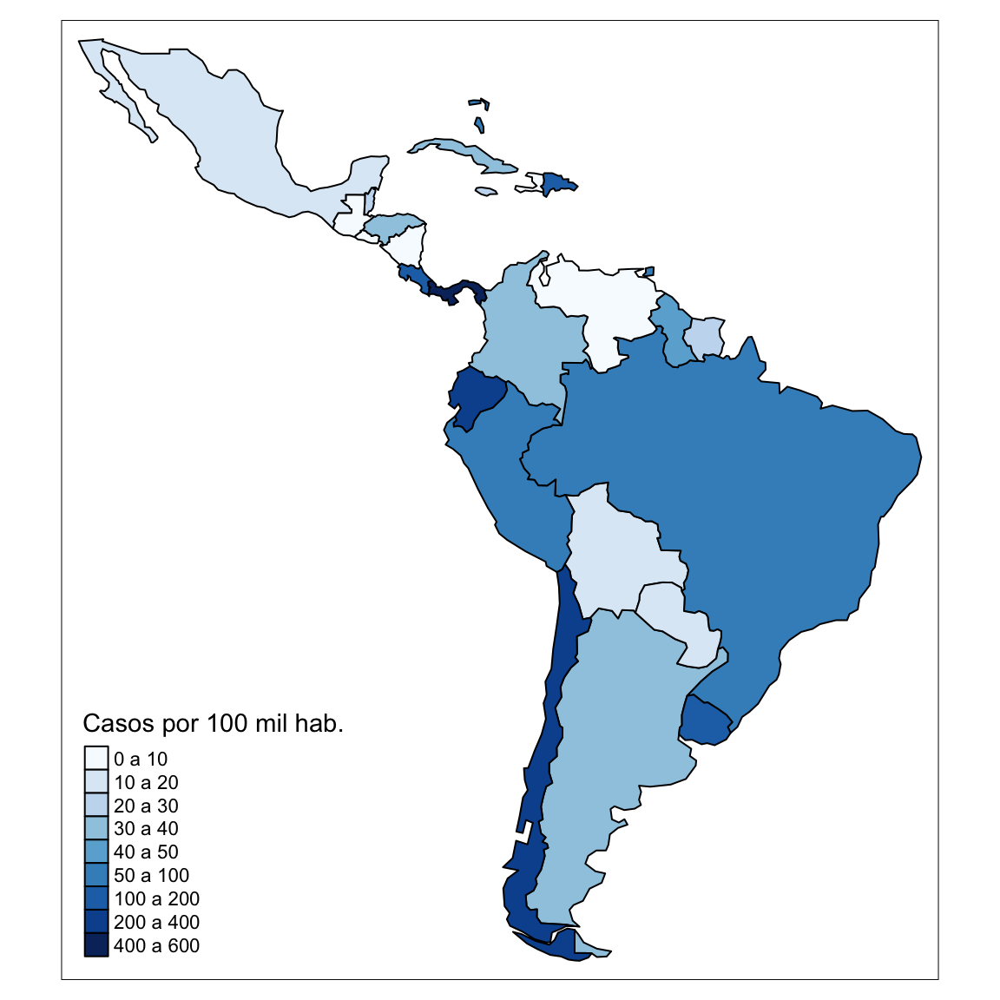

Para visualizar os dados em um mapa, vamos carregar o shapefile do mundo do pacote tmap e selecionar os países da América Latina e Caribe.
# carregando o shapefile do mundo data("World") # from tmap # criando vetor com paises fora da latinoamerica e caribe (lac) fora <- c("Canada", "United States", "Greenland") # selecionando apenas paises lac lac <- World[World$continent %in% c("South America", "North America") & !World$name %in% fora, ]
Agora vamos baixar a última atualzação dos dados curados pela John Hopkins University.
# baixando os dados de covid-19 para o mundo dados_jhu <- get_corona_jhu() # checando se todos paises lac entao em jhu lac$name[!lac$name %in% dados_jhu$country_region] # vamos alterar os nomes em lac para bater com jhu lac$country_region <- as.character(lac$name) lac$country_region[lac$country_region == "Dominican Rep."] <- "Dominican Republic" # selecionando apenas países da lac dados_lac <- dados_jhu[dados_jhu$country_region %in% lac$country_region, ]
Para fazer visualizar os dados no mapa, precisamos juntar os dados de casos de COVID-19 na América Latina e Caribe com os dados do shapefile para a região.
covid_lac <- merge(lac, dados_lac, by = "country_region") covid_lac$confirmed_per100k <- covid_lac$confirmed/covid_lac$pop_est * 1000000
E agora sim, vamos visualizar os dados em um mapa dinâmico.
tmap_mode("plot") tm <- tm_shape(covid_lac) + tm_polygons("confirmed_per100k", title = "Casos por 100 mil hab.", breaks = c(0, 10, 20, 30, 40, 50, 100, 200, 400), labels = c("0 a 10", "10 a 20", "20 a 30", "30 a 40", "40 a 50", "50 a 100", "100 a 200", "200 a 300")) + tmap_style("col_blind") tm
